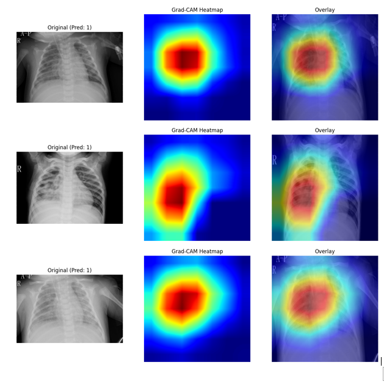
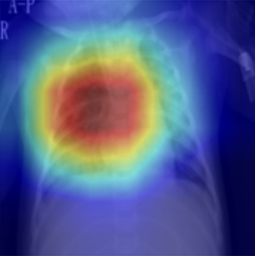
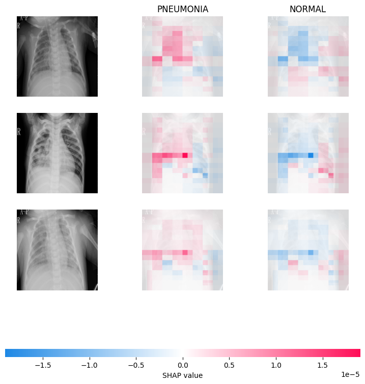
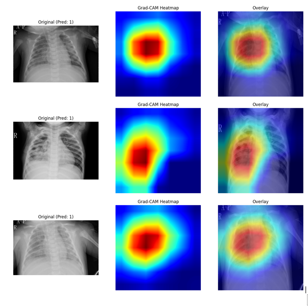
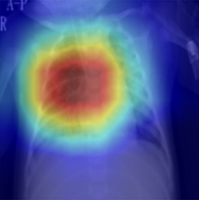
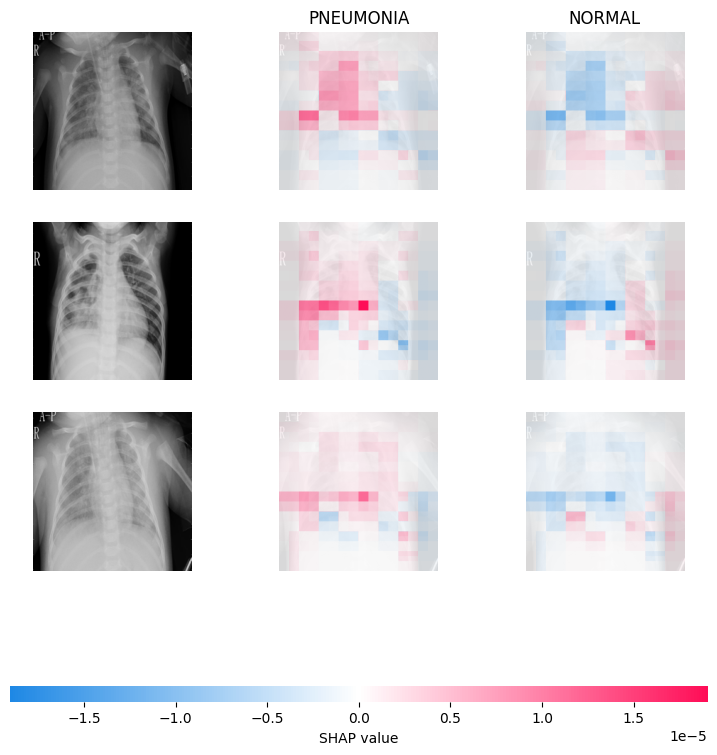
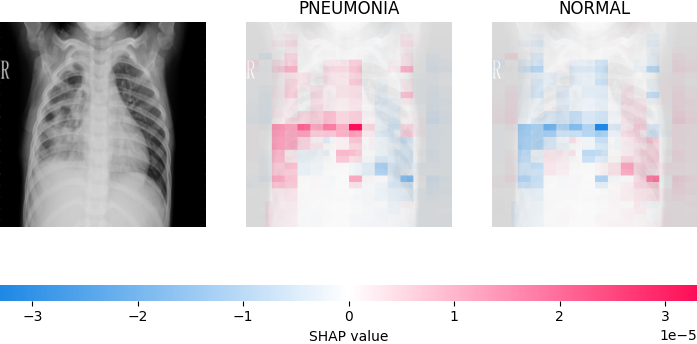
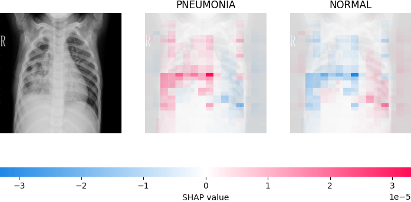

SHAP vs Grad-CAM: Image Explainability in Medical AI
"This project compares Grad-CAM and SHAP to determine which explanation method is more suitable for trustworthy and clinically usable medical AI."
Problem Statement
Deep learning models achieve high accuracy in medical imaging but operate as black boxes. Doctors struggle to trust AI predictions without clear reasoning. This project evaluates which explainability method—Grad-CAM or SHAP—better supports clinical decision-making, transparency, and safety.
Literature Review / Market Research
Grad-CAM is widely used in radiology for visual heatmaps, while SHAP is popular in AI auditing and tabular explainability. Few works quantitatively compare them on chest X-rays.
Research Gap / Innovation
Unlike prior studies, this work evaluates explanations using Sparsity, AOPC, and Probability Degradation instead of only visual comparison.
System Methodology
Dataset / Input
Chest X-ray dataset with 624 test images. Images were resized, normalized, and augmented before training.
Model / Architecture
DenseNet121 fine-tuned for Pneumonia vs Normal classification. Grad-CAM applied to last conv layer; Deep SHAP used black baseline.
Live Execution
VIEW CODE / DEMOResults & Analysis
Evaluation Plots

AOPC Plot

Probability Drop

Confusion Matrix

Sparsity Plot

ROC Curve

Recall Curve
Grad-CAM vs SHAP (Examples)


Pneumonia Visualizations
 






Additional Analysis
SHAP Individual Predictions
 

Academic Credits
Project Guide
Dr. Jay Prakash Singh
Team Member 1
Ekaansh Sawaria
23FE10CSE00450
Team Member 2
Devansh Sharma
23FE10CSE00470